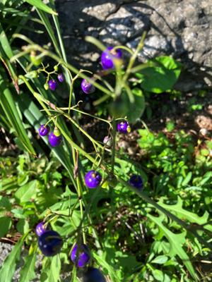

うるがいの話 ある日
最新: 「風流」だ【うるがいの話 ある日】とは 一日だけのプログです
『うるがいの話』の最新一日だけのプログで、通信料が少なく経済的だ。カニの画像をクリックすると全ての日付が載る『うるがいの話』サイトを表示します
|
|
【うるがいの話】 うるがい(ｳﾙｶﾞｲ urugai)とは、『もずくがに』の名前でとても大きくなります。 |
|---|---|
|
|
【カミマヤーの話】 猫のことを方言でマヤーといいます。カミマヤー（kamimayaa）とは、神の猫のことです。 |
|
【たながぁの音楽】 たながぁ（ﾀﾅｶﾞｰ tanagaa）とは手長えびのことで、何種類かあり大きいのは車 エビぐらいになります。 |

|
【ぶながぁの話】 ぶながぁ(ﾌﾞﾅｶﾞｰ bunagaa)とは、赤い髪の毛、赤い身体、そして身長は１ｍ２０ｃｍ ぐらい、川の蟹を食べているの目撃された。場所は沖縄県国頭郡大宜味村のと ある村僕の隣近所に住んでいる爺さんから、聞いた話です。 |
|
|
【ギーマの話】 ギーマ(giima)とは、山原の里山に咲くスズランに似た、 花を付けます。実は食べられます、 気が付くと口の周りが紫になっています。 |
2023年06月26日 (月）「風流」だ
15:38

禅的生活 玄侑 宗久 ちくま新書
人柄としての「風流」より引用
怒っているときにそこに戻ろうなんて至難の業ではあるが、思い通りにならな
いことが起こったら「風流」だと意識する習慣を身につけるしかないのだと思
う。だから足をぶつけても風流、歯が痛くても風流と、とりあえず呟いてみる
のだ。
そういう意識の仕方を習慣化していくと、やがて一瞬に「ゆらぎ」が起こるよ
うになるはずである。
この前、窓のガラス戸を開けようと、窓に近づくとき机テーブルの角に左足の
中指を思いきりぶつけ、紫のあざが出来ていた。２カ月前から、作り続けてい
る旧新幹線サイトを昨夜出来た！と思って今朝からUiPathでロボットを作り始
めると、またしてもサイトの作りに誤りと見つけてしまう。
これも、「風流」とつぶやくことにする。時間はたっぷりとある。この本、と
ても難しい。
１５時００分 ビットコインの総資産 ￥１２、５３３（↓２９１）